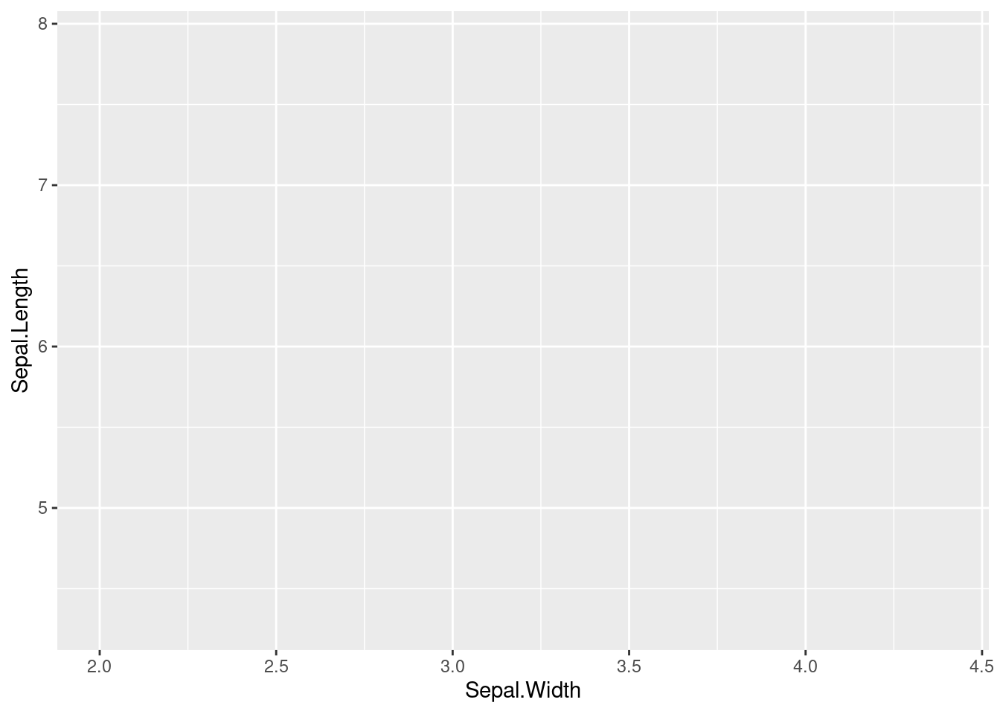

Common error sources in R
11.1 object 'x' not found
You’re trying to call an object that hasn’t been loaded yet. This error is commonly caused by typos.
Example:
## Error in mean(X): object 'X' not foundYou’ve created an object named x, but on the second line, you’re trying
to call an object named X (capitalisation!).
When in doubt, you can inspect the names of all objects currently loaded by running this command:
11.2 could not find function 'x'
You’re trying to run a function that doesn’t exist or that requires you to load an extension package first. Check whether you’ve typed in its name correctly. If it’s a function from an extension package, check if that package has been loaded.
Example:
## Error in FUN(X[[i]], ...): object 'predictor' not found
You need to load tidyverse (or ggplot2) before you can use the
ggplot() function.
11.3 there is no package called 'x'
You’re trying to load an extension package that hasn’t been installed yet.
Example:
## Error in library(ggjoy): there is no package called 'ggjoy'Install the package first:
11.4 unexpected symbol
Check if you’ve forgotton a comma or bracket somewhere, or if you’ve used a comma or bracket that shouldn’t be there.
Example:
## Error: <text>:3:8: unexpected symbol
## 2: ggplot(data = iris
## 3: aes
## ^This error is difficult to spot because the error message isn’t too helpful:
There is a missing comma at the end of line 2, after iris.
Example:
## Error: <text>:3:29: unexpected ')'
## 2: aes(x = Sepal.Width,
## 3: y = Sepal.Length))
## ^The bracket after iris should be a comma.
## Error: <text>:3:30: unexpected ')'
## 2: aes(x = Sepal.Width,
## 3: y = Sepal.Length)))
## ^Superfluous bracket at the end of line 3.
11.5 It doesn’t work and there isn’t even an error message
You’ve probably missed a bracket.
Example: The following command won’t produce an error message, but no graphic either:
> ggplot(data = iris, + aes(x = Sepal.Width, + y = Sepal.Length) + + geom_point() +
In the console, you’ll see that there’s a new line starting with +.
This means that the previous command hasn’t been completed yet:
completed commands are followed by new lines starting with >.
In this particular case, the malfunction is caused by a missing
bracket on the third line. The last bracket on this line closes
the command aes(, but you need a second bracket to close
the command ggplot(.
Here is another example of code that doesn’t produce an error but that doesn’t produce the desired graphic either:

## geom_point: na.rm = FALSE
## stat_identity: na.rm = FALSE
## position_identityReason: the + on line 3 is missing.